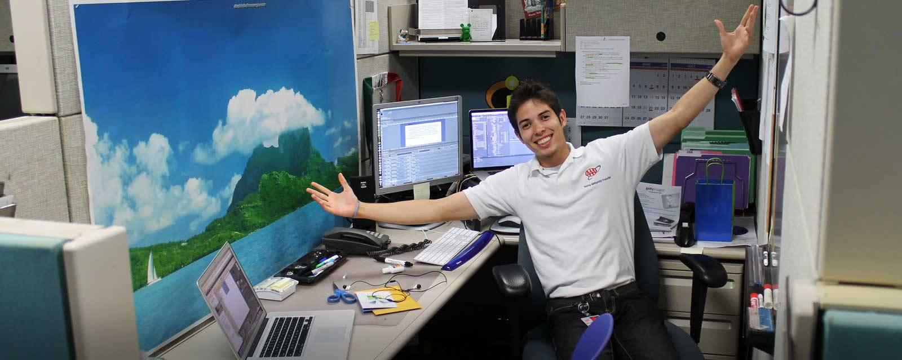
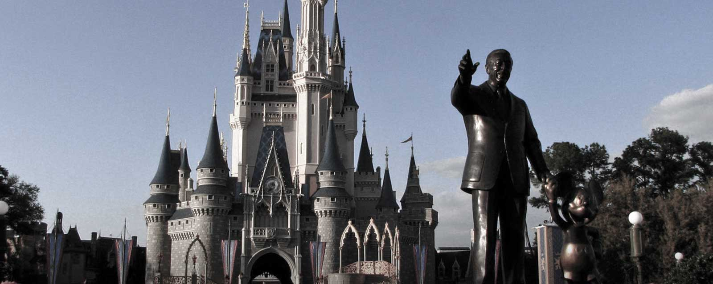

STORY:
The Brooklyn Bridge, in New York City. My favorite place in the world. How cold it was that day, at least for me, is unspeakable. It felt like the tips of my fingers were about to fall off as I tried to draw the view of uptown Manhattan on a little leather sketchpad that I carried throughout New York. This was in the Fall of 2012 during a 5 month internship that turned out to be the most incredible adventure of my life.
Below I'd like to share with you a few of the experiences and positions that have made me the designer I am today.
Below I'd like to share with you a few of the experiences and positions that have made me the designer I am today.
STUDIES:
University of Central Florida
Bachelor of Fine Arts - Emerging Media (Specialization: Graphic Design)
2010 - Present
GPA - 3.98
2010 - Present
GPA - 3.98
WORK:

Graphic/Web Designer & Video Editor, Apr. 2011 - Present
AAA National - Heathrow, FL
-Design and build conference displays and web interface elements for national product marketing campaigns.→
*Reach: 2000+ AAA Club representatives.
-Design, develop, mobile-optimize, and maintain aaa.com subdomain & partner pages → (aaa.com/marriott, /hyatt, /bestwestern, /directv, /specialoffers, etc.).
*Reach: 53+ million AAA members across the US/Canada.
-Conceptualize, film, and post-produce 3 annual AAA National conference videos.→
* Reach: 500+ AAA annual conference attendees.
*Reach: 2000+ AAA Club representatives.
-Design, develop, mobile-optimize, and maintain aaa.com subdomain & partner pages → (aaa.com/marriott, /hyatt, /bestwestern, /directv, /specialoffers, etc.).
*Reach: 53+ million AAA members across the US/Canada.
-Conceptualize, film, and post-produce 3 annual AAA National conference videos.→
* Reach: 500+ AAA annual conference attendees.
Letter of Recommendation

Professional Photographer (PT), Feb. 2012 - Oct. 2013
The Walt Disney Co. - Lake Buena Vista, FL
Trained in Commercial, Professional, and Portrait Photography, lighting principles, composition, digital photo enhancement, and studio interaction principles.
Work with heavy guest interactions in French, Spanish and English. 500+ photos taken per day.
Work with heavy guest interactions in French, Spanish and English. 500+ photos taken per day.
Graphic Design & Web Content Management Intern, Aug. - Dec. 2012
The Social Learning Project - New York, NY
- Create web elements, promo videos and co-ordinate design for online learning management system.
- Pitch interactivity and design elements to B2B clientele, elaborating on aesthetic and efficiency.
- Co-authored current product marketing campaign: slogan, look & feel, logo revamp.→
- Pitch interactivity and design elements to B2B clientele, elaborating on aesthetic and efficiency.
- Co-authored current product marketing campaign: slogan, look & feel, logo revamp.→
Letter of Recommendation
Graphic Design & Social Media Marketing Intern, Aug. - Dec. 2012
INROADS, Inc. - New York, NY
- Social media management, design for media layouts, and other graphic elements for print/web.
- Lead designer in webpage redesign, national newspaper ad campaign design, web analytics.
- Lead designer in webpage redesign, national newspaper ad campaign design, web analytics.
Letter of Recommendation
LEADERSHIP:
President
2013 - 2014
2013 - 2014
Co-Founder, Director
2014
2014
Co-Host
2013 - 2014
2013 - 2014
HONORS/AWARDS:
-
Introspective, Juried Photography Exhibit
UCF SVAD Gallery, May-July 2013→ -
James R. Hopes Art Scholarship
Spring 2013→ - UCF President's Honor Roll - 4.0 GPA
2011 - 2012 -
Hispanic Heritage Scholarship Fund Recipient
2011 - 2012 → - INROADS Intern of the Year
Summer 2011 - Florida Bright Futures Scholarship
2010-Present